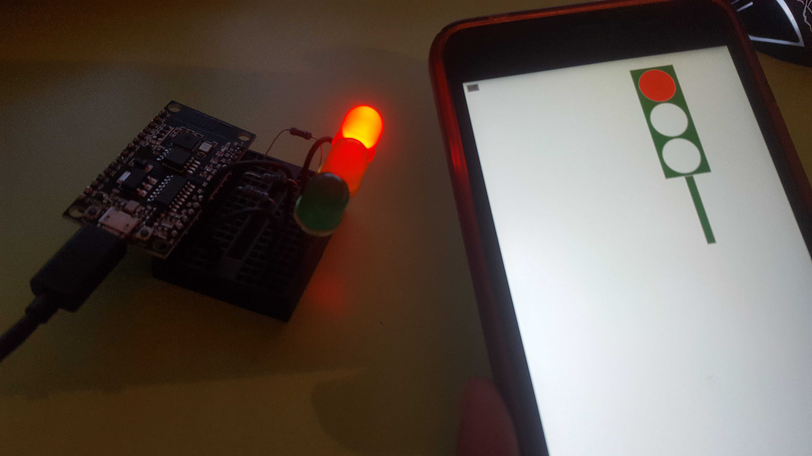
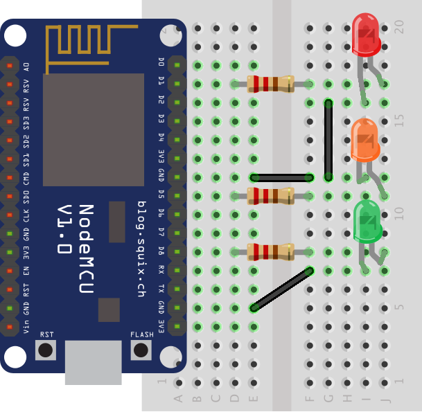
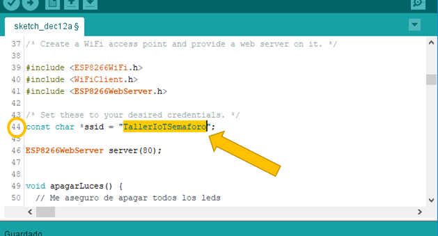

Tutorial 6: Semáforo Móvil

Objetivo:
El objetivo de este ejemplo es mostrar cómo crear un punto de acceso Wifi con la placa NodeMCU y un mini-servidor de páginas web que proporcionará una página al dispositivo móvil que se conecte para poder manejar las luces del semáforo.
Este proyecto hace uso del circuito que simula un semáforo
Pasos a Seguir
- Desconecte el cable usb de la placa o del ordenador (con el objetivo de evitar cortocircuitos)
- Coloque la parte lateral donde aparecen más pines con el prefijo "D" conectada a la placa en la primera columna. Los demás pines quedarán en el aire como en la imagen.
- Coloque las resistencias, leds y cables según el esquema de circuito que se muestra a continuación:
- Conecte la placa al ordenador por el cable usb
- Abra el entorno y copiar el siguiente código:
- Modifique el valor que se encuentra entre comillas en la línea 44 por uno inventado que pueda recordar facilmente. Este valor será el nombre del punto de acceso wifi al cual se conectará su móvil.
- Pulse el segundo botón del entorno para compilar y subir el código.
- Tras transferir el código busque en su dispositivo móvil una red wifi a la que conectarse. Seleccionela y vaya al navegador de su móvil e introduzca la siguiente dirección: http://192.168.4.1
- Pulse las luces del semáforo que le aparece en su pantalla móvil y verá como se encienden los leds de su circuito.


Código Semáforo Móvil
/* Este poryecto ha sido diseñado usando un ejemplo de codigo encontrado en internet
* a continución se presentan las licencias que expone el ejemplo inicial.
*/
/*
* Copyright (c) 2015, Majenko Technologies
* All rights reserved.
*
* Redistribution and use in source and binary forms, with or without modification,
* are permitted provided that the following conditions are met:
*
* * Redistributions of source code must retain the above copyright notice, this
* list of conditions and the following disclaimer.
*
* * Redistributions in binary form must reproduce the above copyright notice, this
* list of conditions and the following disclaimer in the documentation and/or
* other materials provided with the distribution.
*
* * Neither the name of Majenko Technologies nor the names of its
* contributors may be used to endorse or promote products derived from
* this software without specific prior written permission.
*
* THIS SOFTWARE IS PROVIDED BY THE COPYRIGHT HOLDERS AND CONTRIBUTORS "AS IS" AND
* ANY EXPRESS OR IMPLIED WARRANTIES, INCLUDING, BUT NOT LIMITED TO, THE IMPLIED
* WARRANTIES OF MERCHANTABILITY AND FITNESS FOR A PARTICULAR PURPOSE ARE
* DISCLAIMED. IN NO EVENT SHALL THE COPYRIGHT HOLDER OR CONTRIBUTORS BE LIABLE FOR
* ANY DIRECT, INDIRECT, INCIDENTAL, SPECIAL, EXEMPLARY, OR CONSEQUENTIAL DAMAGES
* (INCLUDING, BUT NOT LIMITED TO, PROCUREMENT OF SUBSTITUTE GOODS OR SERVICES;
* LOSS OF USE, DATA, OR PROFITS; OR BUSINESS INTERRUPTION) HOWEVER CAUSED AND ON
* ANY THEORY OF LIABILITY, WHETHER IN CONTRACT, STRICT LIABILITY, OR TORT
* (INCLUDING NEGLIGENCE OR OTHERWISE) ARISING IN ANY WAY OUT OF THE USE OF THIS
* SOFTWARE, EVEN IF ADVISED OF THE POSSIBILITY OF SUCH DAMAGE.
*/
/* Create a WiFi access point and provide a web server on it. */
#include <ESP8266WiFi.h>
#include <WiFiClient.h>
#include <ESP8266WebServer.h>
/* Set these to your desired credentials. */
const char *ssid = "TallerIoTSemaforo";
ESP8266WebServer server(80);
void apagarLuces() {
// Me aseguro de apagar todos los leds
digitalWrite(D8,LOW);
digitalWrite(D5,LOW);
digitalWrite(D1,LOW);
}
/* Just a little test message. Go to http://192.168.4.1 in a web browser
* connected to this access point to see it.
*/
void paginaPrincipal() {
// Me aseguro de apagar todos los leds
digitalWrite(D8,LOW);
digitalWrite(D5,LOW);
digitalWrite(D1,LOW);
const char webpage[]="<!DOCTYPE html><html><head><title> IoT Semaforo</title><style> .lightItem {border: 2px solid #a1a1a1;width: 96px;background: white;height: 96px;border-radius: 50px;margin: 5px auto;} .trafficLight{border: 2px solid #a1a1a1;width: 120px;background: darkgreen;height: auto;margin: 5px auto 0px auto;} .trafficLightPost{border: 2px solid #a1a1a1;width: 20px;background: darkgreen;height: 180px;text-align: center;margin: 0px auto;} #offButton{border: 1px solid #a1a1a1;width: 30px;background: gray;height: 20px;text-align: center;}</style><script> var xmlhttp = new XMLHttpRequest();function apagarLuces(){document.getElementById(\"red\").style.background=\"white\";document.getElementById(\"orange\").style.background=\"white\";document.getElementById(\"green\").style.background=\"white\";xmlhttp.open(\"GET\", \"off\", true);xmlhttp.send();} function change(color,element){document.getElementById(\"red\").style.background=\"white\";document.getElementById(\"orange\").style.background=\"white\";document.getElementById(\"green\").style.background=\"white\";element.style.background=color;xmlhttp.open(\"GET\", color, true);xmlhttp.send();}</script></head><body><div id=\"offButton\" onclick=\"apagarLuces();\">Off</div><div class=\"trafficLight\"> <div class=\"lightItem\" id=\"red\" onclick=\"change('red',this);\"></div> <div class=\"lightItem\" id=\"orange\" onclick=\"change('orange',this);\"></div> <div class=\"lightItem\" id=\"green\" onclick=\"change('green',this);\"></div></div><div class=\"trafficLightPost\"></div></body></html>";
server.send(200, "text/html",webpage);
/* Webpage
<!DOCTYPE html>
<html>
<head>
<title> IoT Semaforo </title>
<style>
.lightItem {
border: 2px solid #a1a1a1;
width: 46px;
background: white;
height: 46px;
border-radius: 25px;
margin: 5px auto;
}
.trafficLight{
border: 2px solid #a1a1a1;
width: 60px;
background: darkgreen;
height: auto;
margin: 5px auto 0px auto;
}
.trafficLightPost{
border: 2px solid #a1a1a1;
width: 10px;
background: darkgreen;
height: 180px;
text-align: center;
margin: 0px auto;
}
#offButton{
border: 1px solid #a1a1a1;
width: 30px;
background: gray;
height: 20px;
text-align: center;
}
</style>
<script>
var xmlhttp = new XMLHttpRequest();
function apagarLuces(){
document.getElementById("red").style.background="white";
document.getElementById("orange").style.background="white";
document.getElementById("green").style.background="white";
xmlhttp.open("GET", "off", true);
xmlhttp.send();
}
function change(color,element){
document.getElementById("red").style.background="white";
document.getElementById("orange").style.background="white";
document.getElementById("green").style.background="white";
element.style.background=color;
xmlhttp.open("GET", color, true);
xmlhttp.send();
}
</script>
</head>
<body>
<div id="offButton" onclick="apagarLuces();">Off</div>
<div class="trafficLight">
<div class="lightItem" id="red" onclick="change('red',this);"></div>
<div class="lightItem" id="orange" onclick="change('orange',this);"></div>
<div class="lightItem" id="green" onclick="change('green',this);"></div>
</div>
<div class="trafficLightPost">
</div>
</body>
</html>
*/
}
void encenderVerde() {
// Me aseguro de apagar todos los leds
digitalWrite(D8,LOW);
digitalWrite(D5,LOW);
digitalWrite(D1,LOW);
// Indica que se envie la señal de voltaje baja de 0 voltios en el pin D8
// Es decir, encender Led Verde
digitalWrite(D8,HIGH);
}
void encenderAmbar() {
// Me aseguro de apagar todos los leds
digitalWrite(D8,LOW);
digitalWrite(D5,LOW);
digitalWrite(D1,LOW);
// Indica que se envie la señal de voltaje baja de 0 voltios en el pin D5
// Es decir, encender Led Ambar
digitalWrite(D5,HIGH);
}
void encenderRojo() {
// Me aseguro de apagar todos los leds
digitalWrite(D8,LOW);
digitalWrite(D5,LOW);
digitalWrite(D1,LOW);
// Indica que se envie la señal de voltaje baja de 0 voltios en el pin D5
// Es decir, encender Led Rojo
digitalWrite(D1,HIGH);
}
void setup() {
delay(1000);
Serial.begin(115200);
Serial.println();
Serial.print("Configurando Punto de Acceso...");
/* Si se desea poner contraseña se ha de indicar con un segundo argumento */
WiFi.softAP(ssid);
IPAddress myIP = WiFi.softAPIP();
Serial.print("Direccion IP del punto de acceso: ");
Serial.println(myIP);
server.on("/", paginaPrincipal);
server.on("/green", encenderVerde);
server.on("/orange", encenderAmbar);
server.on("/red", encenderRojo);
server.on("/off", apagarLuces);
server.begin();
Serial.println("Servidor de HTTP iniciado (Servidor de paginas webs)");
// Indica la configuración de pines que se utilizarán
// Indica que el pin D1 será de salida (Led rojo)
pinMode(D1,OUTPUT);
// Indica que el pin D5 será de salida (Led ambar)
pinMode(D5,OUTPUT);
// Indica que el pin D8 será de salida (Led verde)
pinMode(D8,OUTPUT);
}
void loop() {
server.handleClient();
}


Explicación del Código de este Ejemplo
TODO